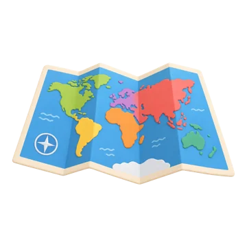
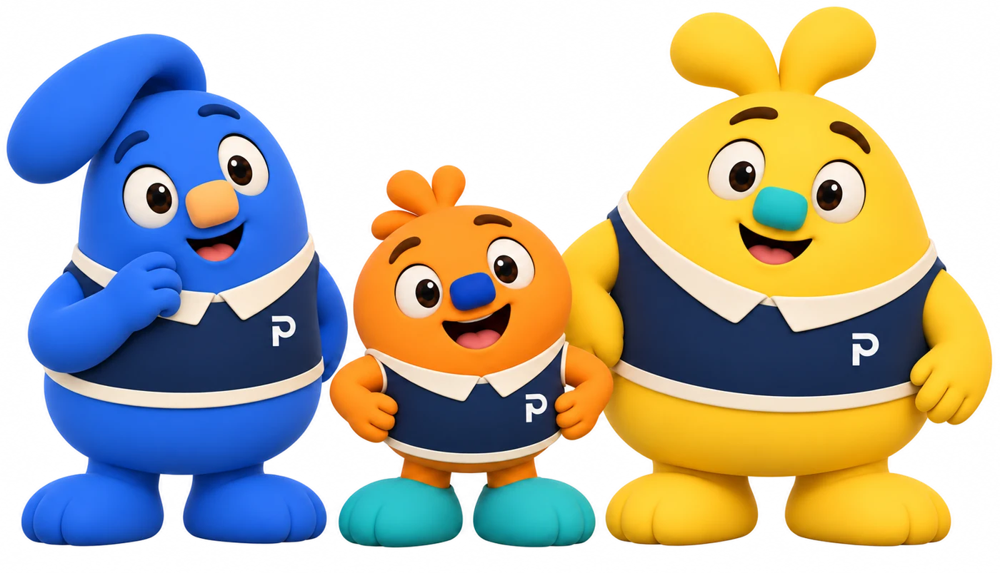
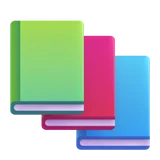
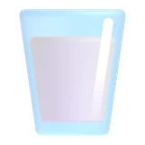
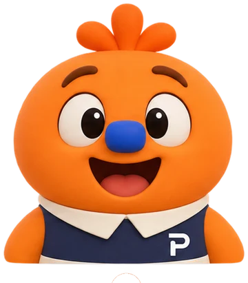
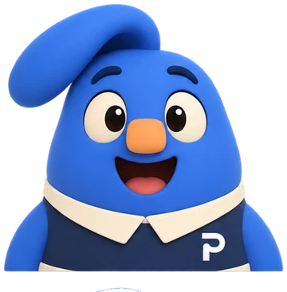
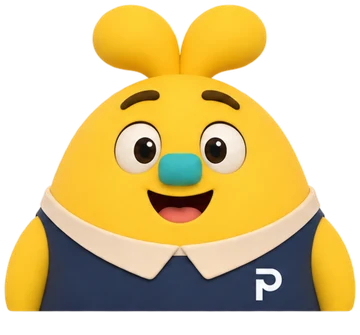
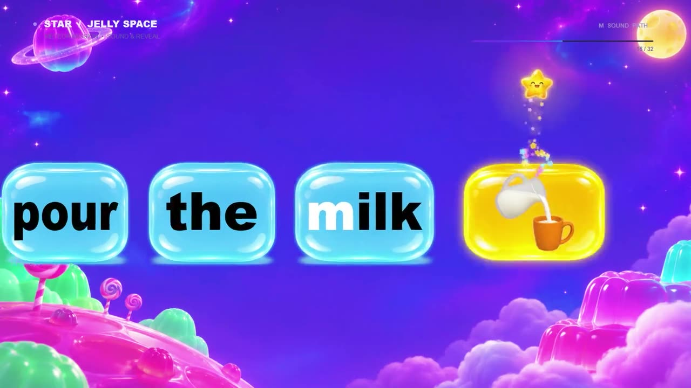
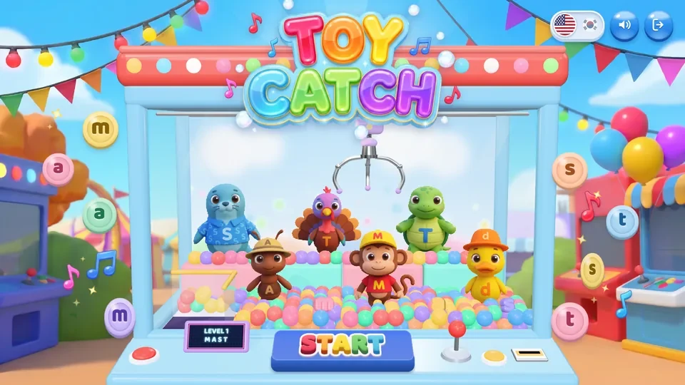

milk
milk mug
mug moon
moon mop
mop소리를 이어 붙이면
m+a+p
=

map처음 보는 단어도 소리로 읽어요
POLY Phonics는 『From Phonics to Reading K』로 알파벳 글자의 소리를 노래와 그림, 게임으로 익히는 5세 과정입니다. 수업에서 쓰는 화면을 먼저 만나 보세요.

 ABC Song · 수업 노래
ABC Song · 수업 노래

6 UnitsLevel K · 30개 레슨
Lesson 1 · Mm입학 첫 소리Why Phonics
‘에이, 비, 씨’ 이름만 외워서는 단어를 읽을 수 없어요. 파닉스는 글자마다 어떤 소리가 나는지 익혀, 처음 보는 단어도 스스로 소리 내어 읽게 하는 방법입니다.
소리를 이어 붙이면

map처음 보는 단어도 소리로 읽어요

‘m… m… m…’ 배를 문지르며 소리를 내고, 챈트로 리듬을 익혀요. 5세는 귀와 몸으로 먼저 배웁니다.

우리말 습관 때문에 m을 ‘므’처럼 읽기 쉬워요. 입술을 다문 채 ‘음~’으로 끝내는 연습까지 수업 안내에 담았습니다.

/m/ → milk, mug → ‘Pour the milk in the mug.’ 배운 소리가 바로 단어와 문장으로 이어져요.
Curriculum
Level K는 6개 Unit, 30개 레슨입니다. Unit마다 다섯 소리를 배우고, 단모음으로 묶어 단어 읽기의 기초를 다집니다.
입학 첫 소리는 m. milk, mug, moon, mop… 그림 단어 18개와 함께 시작해요.
다섯 소리 n · i · c · f · d와 짧은 모음 i를 배워요.
다섯 소리 h · o · r · b · l과 짧은 모음 o를 배워요.
다섯 소리 k · e · g · w · x와 짧은 모음 e를 배워요.
다섯 소리 v · u · j · qu · y와 짧은 모음 u를 배워요.
Z를 배우고 짧은 모음 다섯 개를 다시 모아 본 뒤, 긴 모음으로 넘어가요. 1년을 마치면 6세 Level A 읽기로 이어집니다.

Lesson Flow
Lesson 1 · Mm 수업을 예로 들었어요. 그림으로 뜻을 먼저 알고, 노래로 소리를 듣고, 교재로 글자를 만나고, 게임으로 다시 말해 봅니다.
milk, mug, moon… 오늘 만날 단어를 그림 게임으로 먼저 익혀요.
Picture Match · 듣고 찾기
알파벳송과 ‘m m m · m m milk’ 챈트로 소리와 리듬을 몸에 익혀요.
Sound Chant 4단계
‘Pour the milk in the mug.’ 라임을 읽고, /m/ 소리를 글자 M·m과 연결해요.
Learn and Say · Say It
/m/로 시작하는 그림을 고르고, 4선 위에 Mm을 따라 써요.
Sound Sort · Trace and Write
배운 단어가 게임 속에 나와요. 듣고 고르고, 소리 내어 말하며 복습해요.
Toy Catch · Puzzle · Croco
배운 소리를 혼자 읽어 보며(Fluency Check) 레슨을 마무리해요.
Fluency Check소리가 읽기로 자라는 길
Try Lesson 1
교재 첫 레슨 활동을 그대로 옮겼어요. 소리는 모두 교재 공식 녹음입니다. 아이와 함께 눌러 보세요.
Mm 블록을 누르면 /m/ 소리가 나와요. 입술을 꼭 다물고 배를 문지르며 ‘mmm~’.
교재 p14 그림 6장 중 /m/로 시작하는 4장을 골라요.
milk와 mug를 눌러 듣고, 챈트로 문장을 불러 봐요.
① 눌러서 /m/ 듣기‘므’처럼 모음을 붙이지 않는 게 포인트예요.
② /m/로 시작하는 그림 4개를 찾아보세요.
③ Pour the in the .
Play & Try
수업 시간에 쓰는 노래와 정규 수업 콘텐츠, G-Learning 게임을 그대로 열어 두었어요.
Phonics POND 수업 화면에 들어간 노래예요.
Lesson 1 수업에서 실제로 쓰는 활동이에요.
FAQ

Level K는 읽기를 서두르는 과정이 아니에요. 노래와 동작, 그림으로 소리를 먼저 듣고 말하는 데서 시작해, 한 레슨에 한 소리씩 천천히 쌓아 갑니다.
Lesson 1을 예로 들면 소리 인식(5분) → 소리와 글자 잇기(10분) → 소리 분류(5분) 순서로 교재 활동을 하고, 따라 쓰기와 노래, G-Learning 게임이 이어집니다.
이 페이지의 챈트를 아이와 함께 따라 불러 주세요. /m/처럼 입을 다무는 소리는 ‘므’가 아니라 ‘음~’으로 끝나게 들려주면 좋아요.
태블릿이나 PC의 크롬·사파리에서 가로 화면으로 하면 가장 잘 보여요. 말하기가 있는 게임은 마이크 허용이 필요해요.
Level K 다음은 6세 Level A, 7세 Level B로 이어져요. Level A부터는 소리 → 단어 → 문장 → 이야기 4단계로 읽기를 넓혀 갑니다.